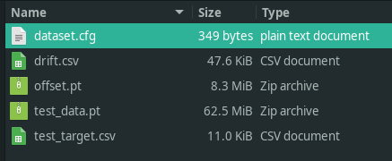

Usage¶
Importing experimental data into cosmos¶
Data from glimpse/imscroll¶
Analyzing data acquired with Glimpse and pre-processed with the imscroll program (see CoSMoS_Analysis) will require the following files:
image data folder in glimpse format
aoiinfo file designating the areas of interest (aois) corresponfing to target molecules to be analyzed
(optional) aoiinfo file designating the areas of interest corresponding to locations that do not contain target molecules (negative control)
driftlist file recording the stage movement that took place during the experiment
To import the needed data from these files, make an empty directory and run:
cosmos config pathname
which will create a file named options.cfg containing command options. [glimpse] section contains the names of your folder/files:
[glimpse]
dir = /home/ordabayev/Documents/Datasets/Grace_article_data/glimpse_sequence_for_Pol_II_and_Spt5/garosen00267
test_aoiinfo = /home/ordabayev/Documents/Datasets/Grace_article_data/aoiinfo2_files_for_DNA_locations_in_cy5_and_cy3_fields/00267_fm1_green_mapped_corr_dnaaois.dat
control_aoiinfo = /home/ordabayev/Documents/Datasets/Grace_article_data/aoiinfo2_files_for_nonDNA_locations_in_cy5_and_cy3/00267_green_mapped_corr_nondnaaois.dat
driftlist = /home/ordabayev/Documents/Datasets/Grace_article_data/green_and_red_driftlists/b3p81_00267_green_driftlist__manual.dat
labels =
labeltype =
(Ignore labels and labeltype for now.)
To import your data from inside the directory containing options.cfg, run:
cosmos glimpse .
The program will create the files containing the digested data in the format needed for fitting:
Using cosmos to fit experimental data to a model¶
Edit options.cfg file:
cosmos fit tracker .
Set visible cuda devices:
CUDA_VISIBLE_DEVICES=1 cosmos fit tracker .
Tensorboard¶
tensorboard --logdir=runs/trackerv1.1.3/nocontrol/lr0.005/bs8/
cosmos show¶
cosmos show tracker . runs/trackerv1.1.3/nocontrol/lr0.005/bs8/